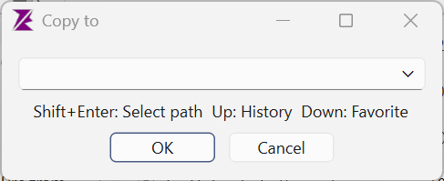
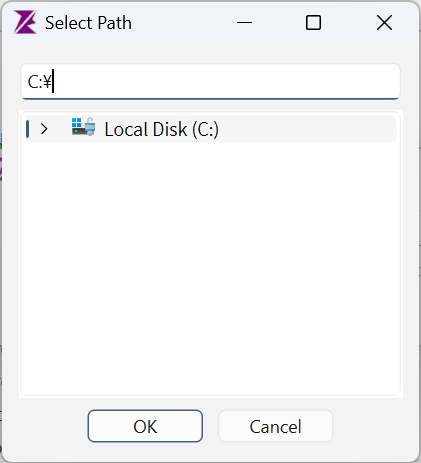
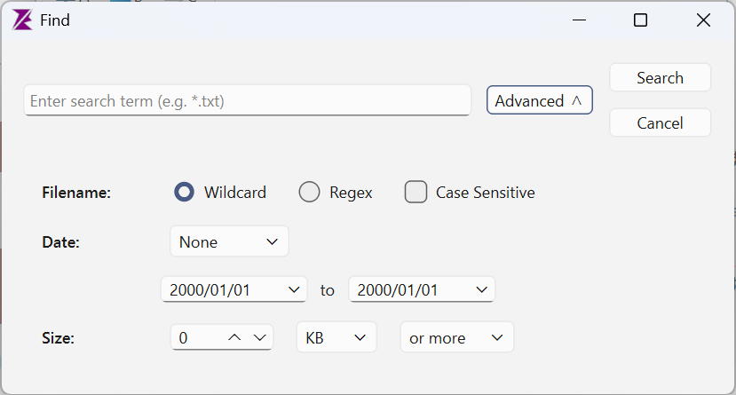
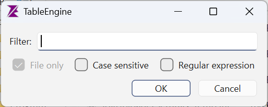
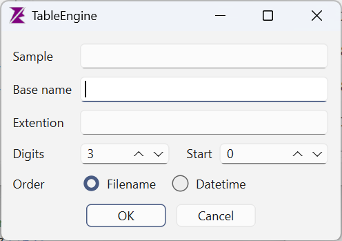
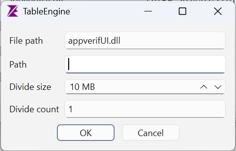
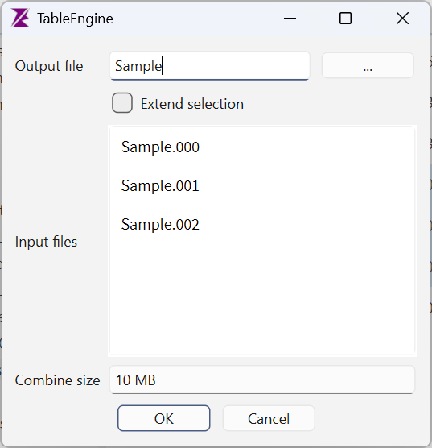
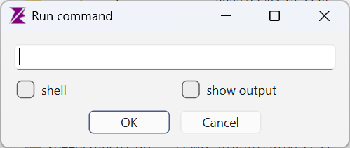
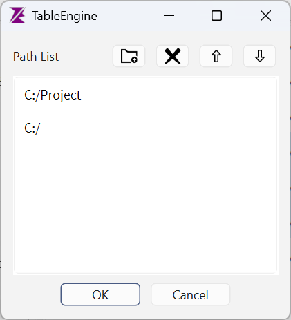
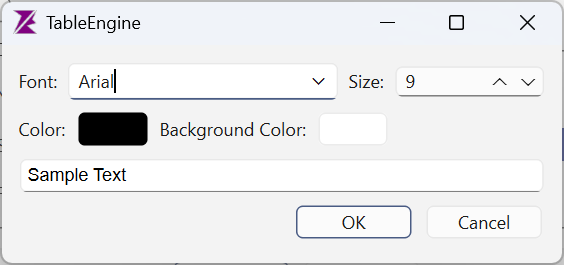

Chapter 11: Dialog Reference
This chapter explains how to use each dialog in TableEngine.
Path Input Dialog
A dialog for entering a destination path for operations such as Copy or Move.

| Control | Description |
|---|---|
| Path Input Field | Type the destination path directly. Path completion is supported. |
| Shift+Enter | Opens the folder tree selection dialog |
| ↑ | Displays the navigation history list |
| ↓ | Displays the favorites folder list |
Folder Select Dialog
A dialog for selecting a folder using a tree view and path input field. Opened by pressing Shift+Enter in the Path Input Dialog.

- Clicking a folder in the tree automatically fills the input field with its path.
- Typing a path in the input field scrolls the tree to show the corresponding folder.
- Path completion is available in the input field.
Find Dialog
A dialog for searching files. Opened via .

| Item | Description |
|---|---|
| Search Box | Enter a file name pattern (e.g., *.txt) |
| Advanced Button | Expands or collapses the detailed search panel |
| Name / Wildcard | Match using * and ? patterns |
| Name / Regular Expression | Match using a regular expression |
| Case Sensitive | Distinguish upper and lower case when matching |
| Date / Type | None / Modified / Created |
| Date / Range | Specify start and end dates with a calendar popup |
| Size / Value | File size to compare against (0–999999) |
| Size / Unit | KB or MB |
| Size / Condition | “At least” or “At most” |
Filter Dialog
A dialog for narrowing the file list display. Opened via .

| Item | Description |
|---|---|
| Filter | Enter a file name pattern to filter by |
| Files Only | Exclude folders; show files only |
| Case Sensitive | Distinguish upper and lower case when filtering |
| Regular Expression | Treat the input as a regular expression |
Bulk Rename Dialog
A dialog for renaming multiple files at once using sequential numbering. Opened via .

| Item | Description |
|---|---|
| Sample | Preview of the new file name based on current settings (read-only) |
| Base Name | The base string for the new file names |
| Extension | New extension without leading dot (optional) |
| Digits | Number of digits in the sequential number (1–4) |
| Start Number | First value in the sequence (0–9999) |
| Order / By Name | Assign numbers in alphabetical order of file name |
| Order / By Date | Assign numbers in ascending order of modification date |
File Split Dialog
A dialog for splitting a file into parts of a specified size. Opened via .

| Item | Description |
|---|---|
| File Path | The file to split (read-only) |
| Output Folder | Destination folder for the split files |
| Split Size | Size per output file (1–1024 MB) |
| Part Count | Calculated number of parts (read-only) |
File Combine Dialog
A dialog for combining split files into a single file. Opened via .

| Item | Description |
|---|---|
| Output File | Name of the combined output file (relative or absolute path) |
| … Button | Opens a save dialog to browse for the output location |
| Extended Selection | Automatically adds related files with the same base name (.000, .001…) |
| Input File List | List of files to combine (in file name order) |
| Combined Size | Total size after combining (auto-calculated, read-only) |
Run Command Dialog
A dialog for executing an arbitrary command line. Opened via .

| Item | Description |
|---|---|
| Command Input Field | The command line string to execute |
| Shell | When checked, runs via cmd.exe /c |
| Show Output | When checked, displays the command's standard output in a window |
Path List Dialog
A dialog for editing path lists such as the favorites.

- Add button (folder icon): Adds a path to the list
- Delete button (trash icon): Removes the selected path
- Up button: Moves the selected path up
- Down button: Moves the selected path down
- Right-clicking the list also provides Add and Delete via a context menu
Font Settings Dialog
A dialog for configuring the font, text color, and background color.

| Item | Description |
|---|---|
| Font | Select the font family |
| Size | Font point size (1–200) |
| Text Color | Click to open a color picker |
| Background Color | Click to open a color picker |
| Sample | Live preview reflecting the current settings |